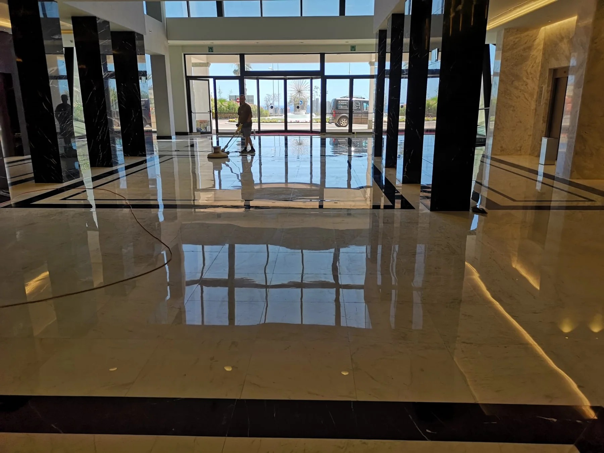
Pulido y cristalizado de suelos.
Desde Benidorm realizamos pulido, cristalizado y abrillantado de suelos, limpieza profesional e impermeabilización para hoteles, comunidades, empresas y particulares en Alicante, Valencia y Castellón.
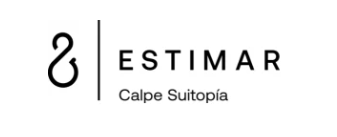
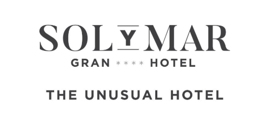
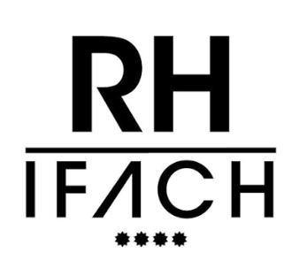
Un servicio técnico y cuidado para espacios que deben ofrecer su mejor imagen.
Trabajamos con maquinaria especializada y tratamientos adaptados a cada superficie. Nuestro objetivo es devolver presencia, limpieza y brillo sin perder de vista la conservación del material.
Realizamos tanto trabajos puntuales como servicios de mantenimiento periódico para hoteles, empresas y otros espacios profesionales.
Conocer nuestros servicios ↗Cuatro especialidades.
Un mismo estándar de acabado.
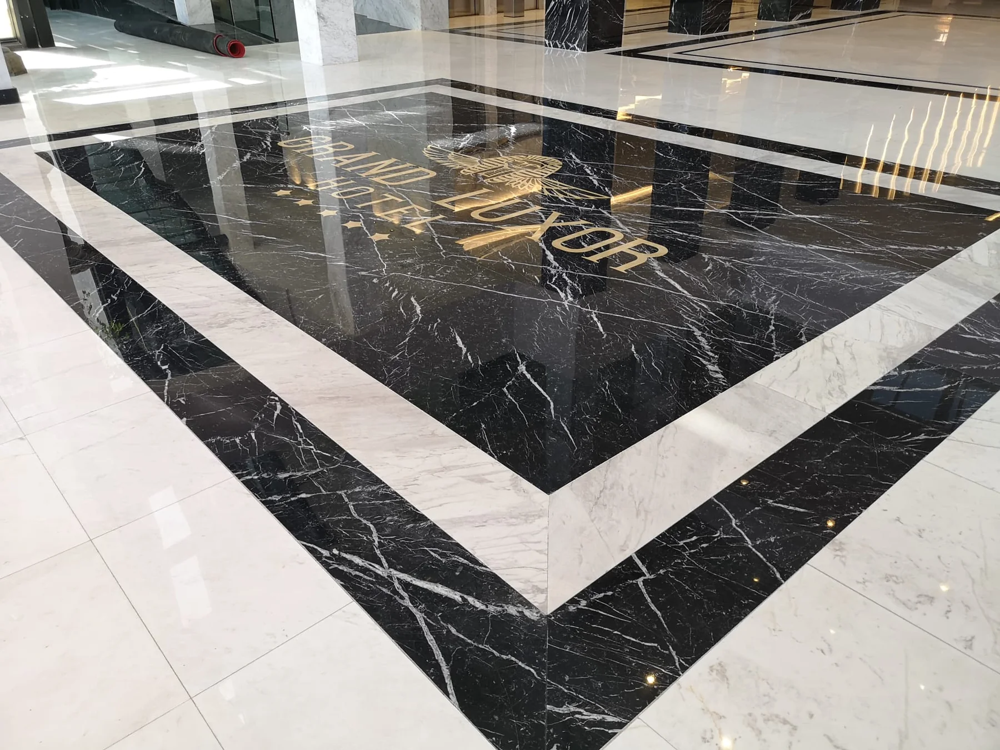
Pulido y cristalizado de suelos y escaleras
Recuperación de brillo, uniformidad y presencia en mármol, mosaicos y otros pavimentos.
Ver servicio ↗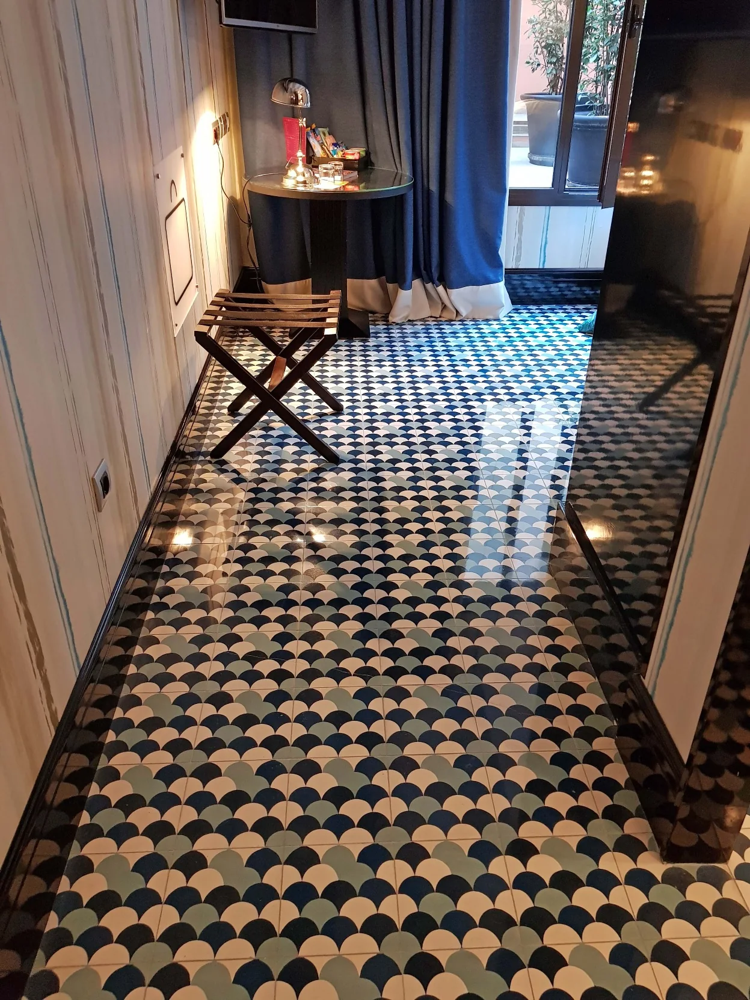
Limpieza de moquetas, alfombras y tapicerías
Limpieza profunda para mejorar la higiene y la imagen de tejidos de uso residencial y profesional.
Ver servicio ↗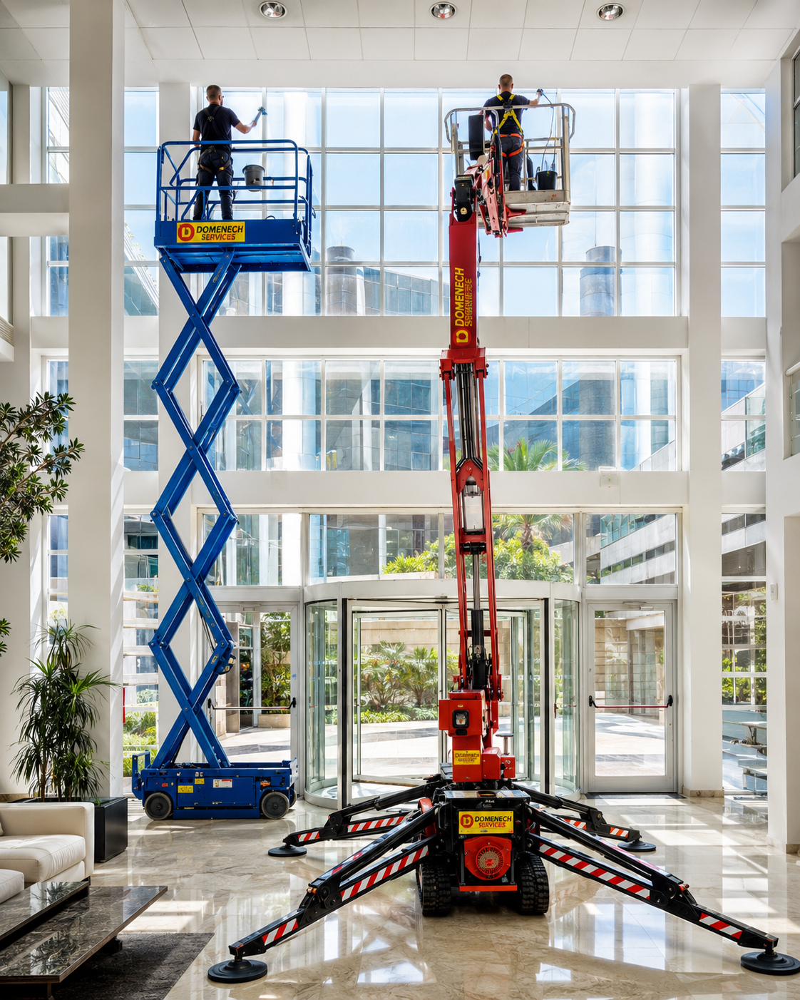
Limpieza profesional de cristales
Ventanales, cristaleras y superficies acristaladas, incluso en trabajos de altura.
Ver servicio ↗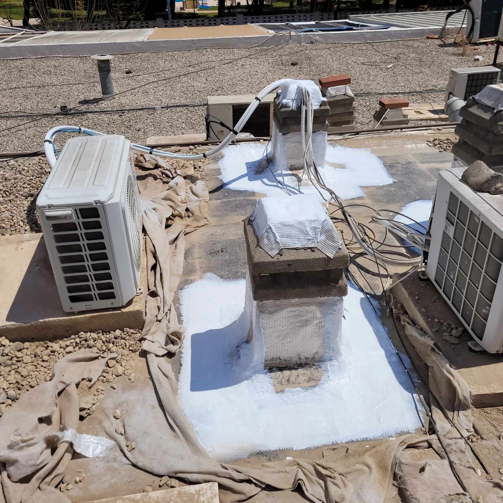
Impermeabilización de cubiertas y tratamiento de filtraciones
Refuerzo con fibra y revestimientos impermeabilizantes para puntos sensibles de cubiertas y elementos constructivos.
Ver servicio ↗Hoteles, comunidades de vecinos y espacios que necesitan mantener una imagen impecable.
Mantenimiento de hoteles
Pulido y cristalizado de recepciones, pasillos y zonas comunes, limpieza de cristales y textiles e impermeabilización.
Ver mantenimiento hotelero ↗ 02Mantenimiento de comunidades de vecinos
Portales, escaleras, rellanos, cristales, pavimentos y zonas comunes de comunidades de propietarios.
Ver mantenimiento de comunidades ↗ 03Servicio en Comunidad Valenciana
Base en Benidorm y desplazamientos por Alicante, Valencia y Castellón para proyectos programados.
Consultar zonas de servicio ↗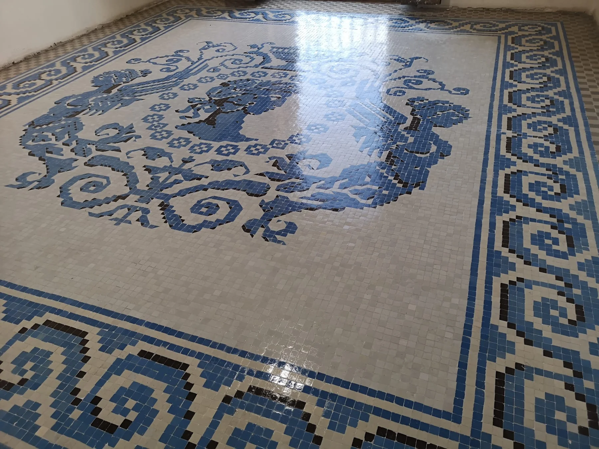
Recuperamos superficies que forman parte de la identidad del espacio.
Los pavimentos decorativos, mosaicos y suelos de mármol requieren un tratamiento específico. Aplicamos procesos orientados a limpiar, restaurar y realzar el acabado de cada material.
Tratamiento adaptadoSegún material, estado y uso.
Maquinaria profesionalEquipos específicos para cada intervención.
Acabado visualBrillo, uniformidad y presencia.
El resultado es nuestra mejor presentación.
También realizamos intervenciones fuera de España.
Nuestra actividad se concentra principalmente en la Costa Blanca, pero algunos proyectos requieren desplazamientos específicos. Hemos realizado trabajos puntuales fuera de España, como esta intervención en Ginebra, Suiza.
Proyectos internacionales sujetos a disponibilidad y características del trabajo.
Ver proyecto de Ginebra ↗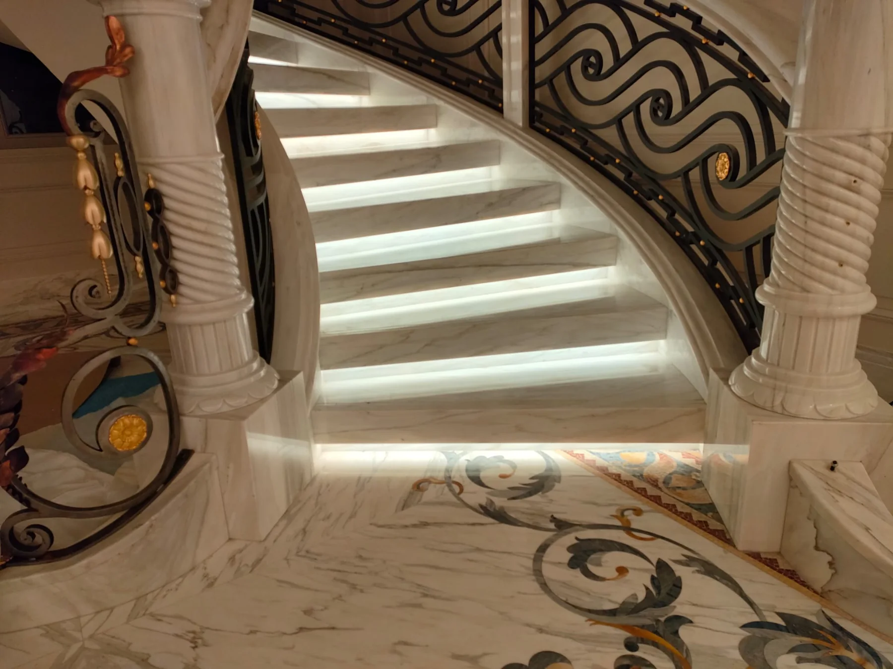
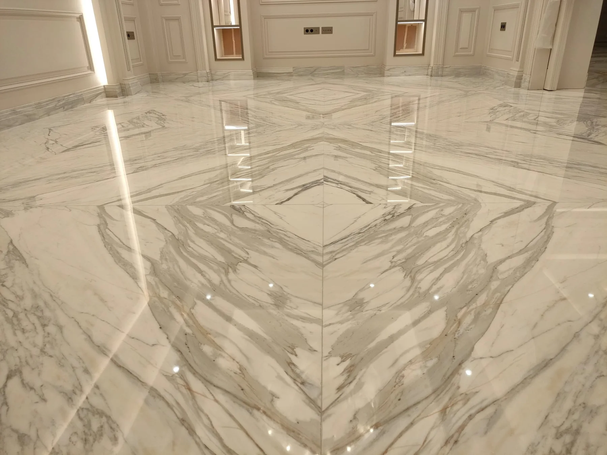
Servicio para hoteles de referencia en Calpe.
La confianza de establecimientos exigentes es una parte importante de nuestro trabajo diario.
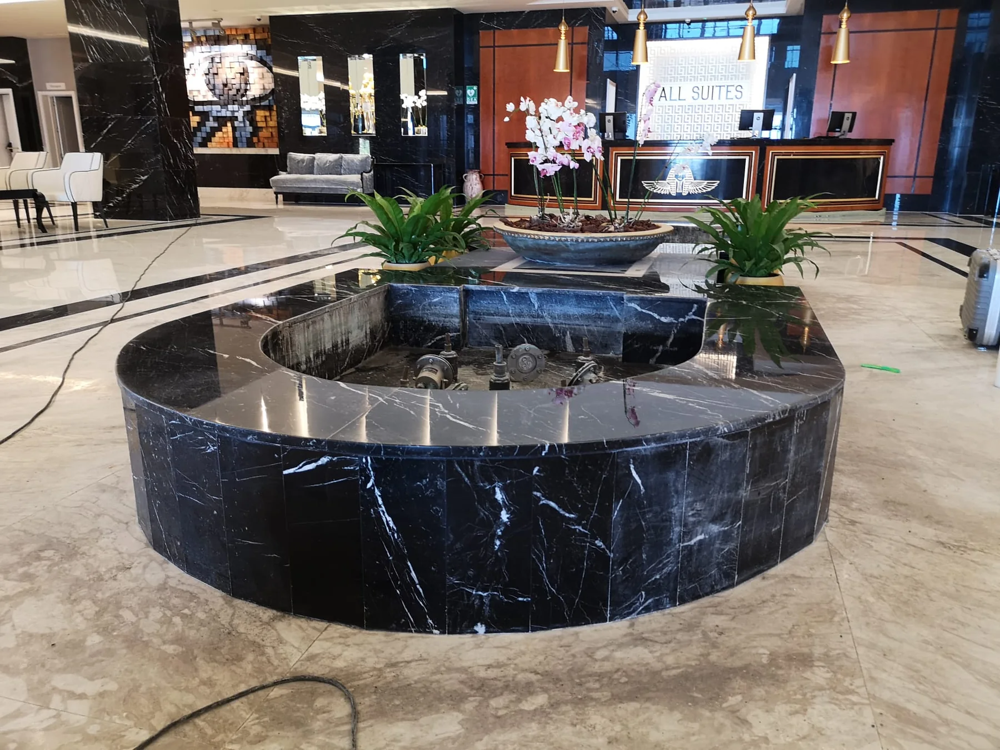